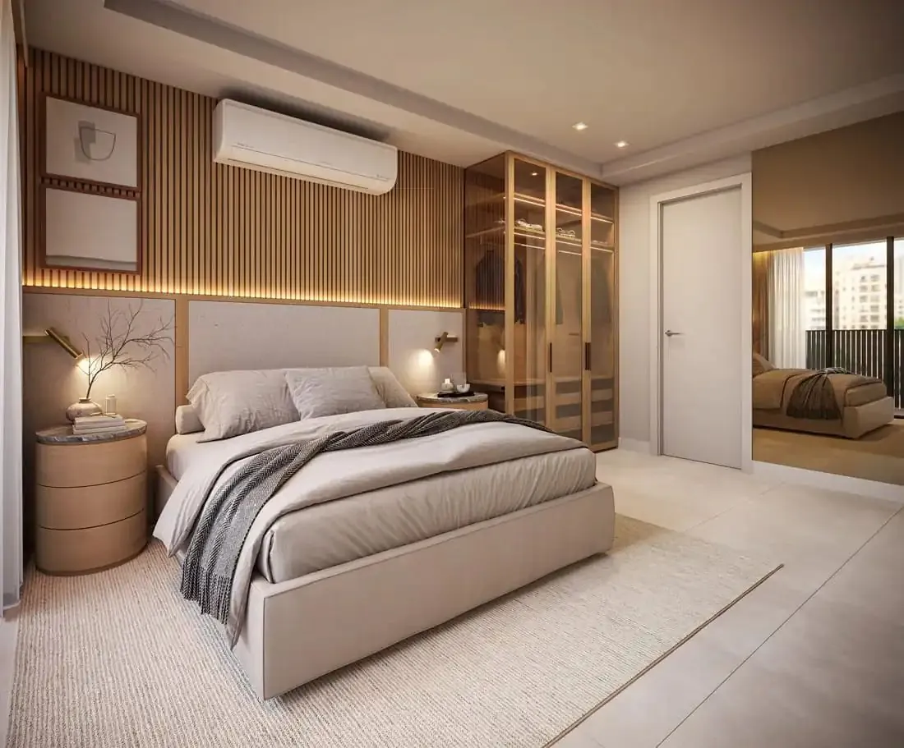
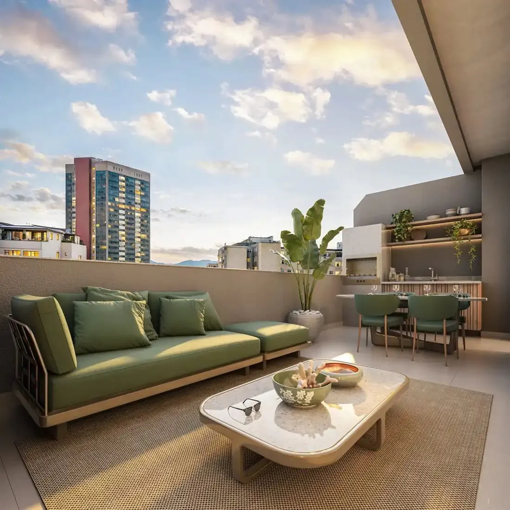

Existe uma vista que o Rio nunca deixou de admirar.
De frente para a Praia do Flamengo, com o Aterro, a Baía de Guanabara e o Pão de Açúcar emoldurando cada amanhecer. Um dos cartões-postais mais famosos do mundo, agora como paisagem da sua sala, no coração da Zona Sul, perto de Botafogo, do Centro e de tudo o que o Rio tem de melhor.
Uma paisagem que ninguém pode tirar de você.
À frente, o Parque do Flamengo, área verde protegida com cerca de 1,2 milhão de m² de jardins de Burle Marx. Um parque tombado entre a sua janela e o mar.
A sofisticação que o Flamengo merecia.
Espaço para cada momento da sua família.


Imagens ilustrativas de decoração, apenas como inspiração. Não representam as unidades do empreendimento.
Plantas, metragens e condições serão apresentadas no lançamento. Cadastre-se para receber primeiro.
No coração da Zona Sul.
Praia do Flamengo, 186, entre a Rua Machado de Assis e a Rua Almirante Tamandaré. Metrô, comércio, escolas e cultura, tudo a uma caminhada de distância.
Perguntas frequentes
Dúvidas sobre o Praia do Flamengo, 186.
Endereço, tipologias, vista e lista VIP do pré-lançamento.
Onde fica o Praia do Flamengo, 186?
Na Praia do Flamengo, 186, no bairro do Flamengo, Zona Sul do Rio de Janeiro, entre a Rua Machado de Assis e a Rua Almirante Tamandaré. O endereço fica de frente para o Parque do Flamengo, a Baía de Guanabara e o Pão de Açúcar.
O que é o empreendimento Praia do Flamengo?
É um pré-lançamento de alto padrão em um conjunto art déco de 1943, com três edifícios em um quarteirão inteiro, que renasce com retrofit completo, ruas internas e garagem no subsolo.
Quais são as tipologias?
Apartamentos de 2, 3 e 4 quartos, pensados para famílias que querem viver o Flamengo. Plantas, metragens e condições serão apresentadas no lançamento.
Os apartamentos têm vista para o mar?
Sim. O endereço fica na orla, com vista para a Baía de Guanabara e o Pão de Açúcar, e o Parque do Flamengo, com cerca de 1,2 milhão de m² de jardins de Burle Marx, fica entre o prédio e o mar.
O Praia do Flamengo fica perto do metrô?
Sim. As estações Flamengo e Largo do Machado ficam no bairro, e Botafogo e o Centro têm acesso rápido. A Marina da Glória e o MAM Rio ficam pela orla.
Quando começam as vendas?
O empreendimento está em fase de aprovação, e as vendas só começam após o registro da incorporação. Quem entra na lista VIP recebe o book, as plantas e as condições antes da abertura das vendas.
Como entro na lista VIP do Praia do Flamengo?
Preencha o cadastro desta página ou fale no WhatsApp (21) 98172-8823 com Andrea Gonçalves, corretora de imóveis, CRECI 72519.
Seja o primeiro a conhecer.
Cadastre-se e receba o book do Praia do Flamengo, as plantas e as condições de pré-lançamento antes da abertura das vendas.